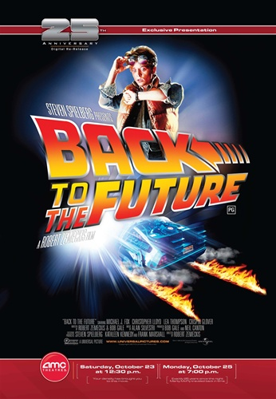
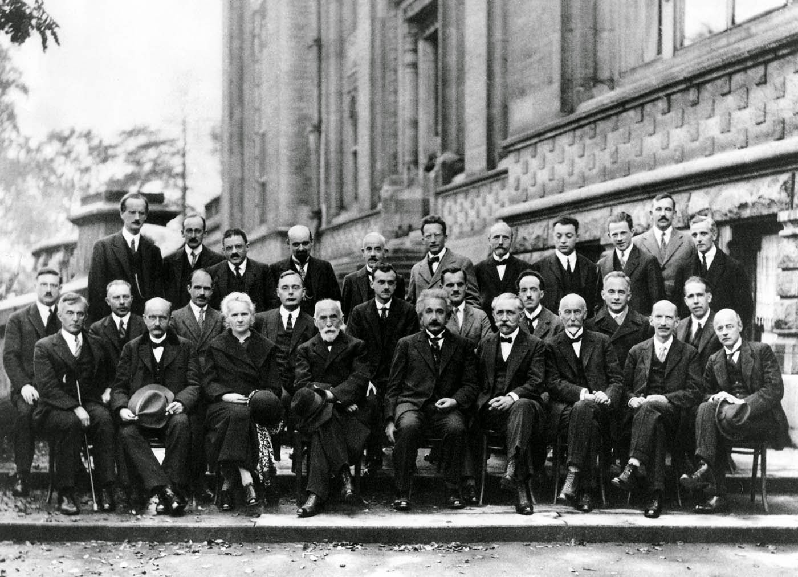
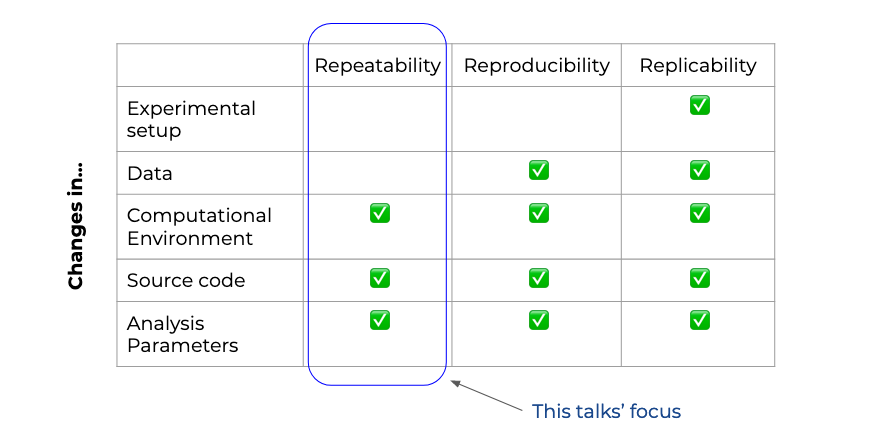

Reproducibility
- Why does it matter
- Modes of collaboration
- Reproducibility is a means to an end
- Why does it matter
- Modes of collaboration
- Reproducibility is a means to an end
- Working with last week’s idea
- Rescuing an old project
- Re-running an analysis on new data

- Colleagues
- Internal stakeholders
- External peers

Note
Examples: Colleagues - Peer review - Learning from each other Stakeholders - Incorporating domain knowledge - Informing decision-making External peers - Academic partnerships - Meetups/working groups
Note
Example: Someone presents project slides to a group during a meeting. Participants need to share time (and often space) Group typically tinkers with artifact (and presenter) and gives feedback - Requires lots of prep to be effective - Is limited to observation of the artifact (and the presenter) - Suffers from presenter bias
Distributed in time & space
Collaborators can tinker
Two-way interactions
Requires adequate tools
This is a quote withinterpreted text
import sklearn
a = 1 + 2
Note
Example: open source projects Distributed in time and space Everybody has access to the development code and artifact in their own terms Group can tinker with everything and give feedback, which can be replied to also asynchronously Requires right collaboration tools
See also
This is a simple seealso note.
https://docs.google.com/presentation/d/1yHLPvPhUs2KGI5ZWo0sU-PKU3GimAk3iTsI38Z-B5Gw/edit#slide=id.p

- Tools –> we’ll look at some, but they will change
- Culture/Mindset –> I hope to convince you :)